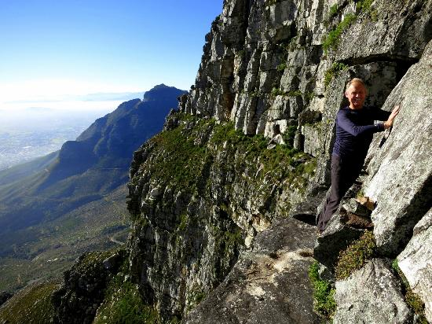
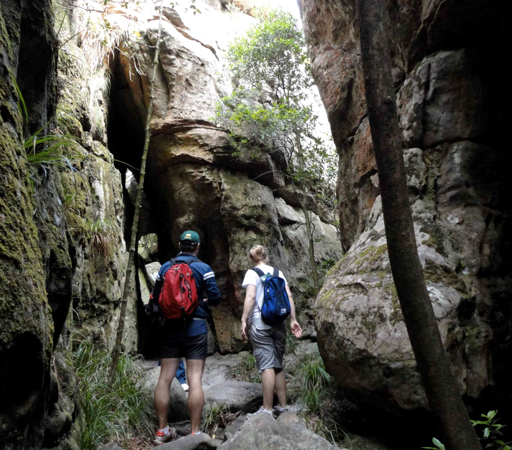
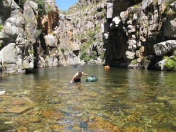
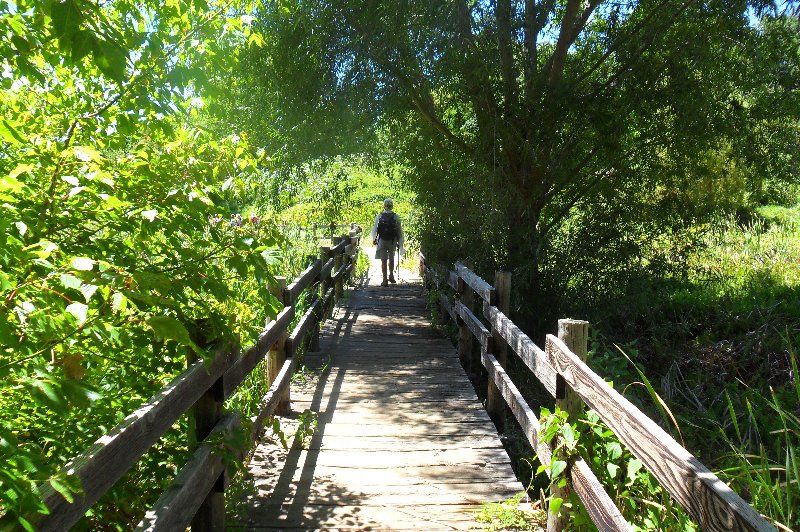
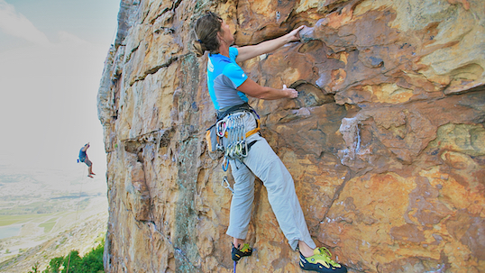
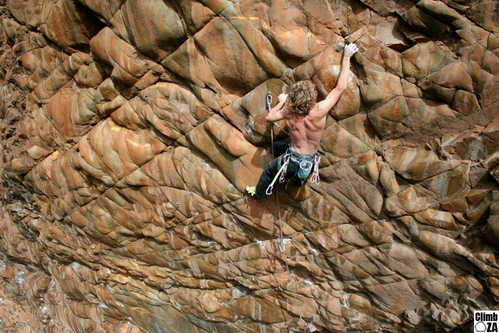
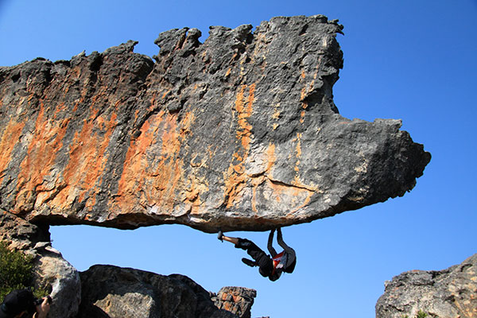
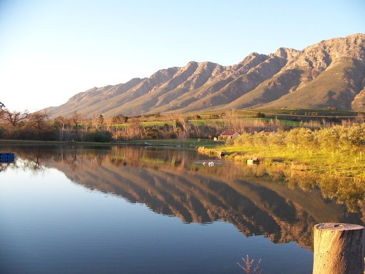
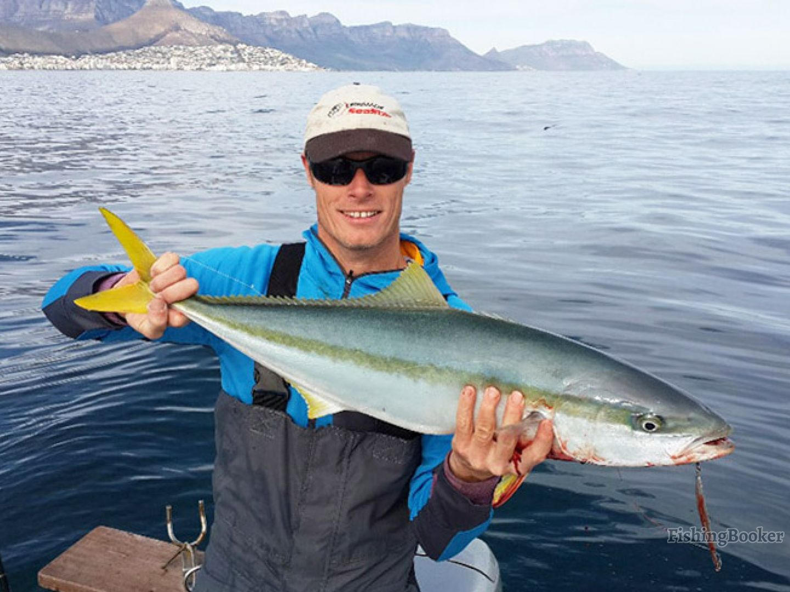
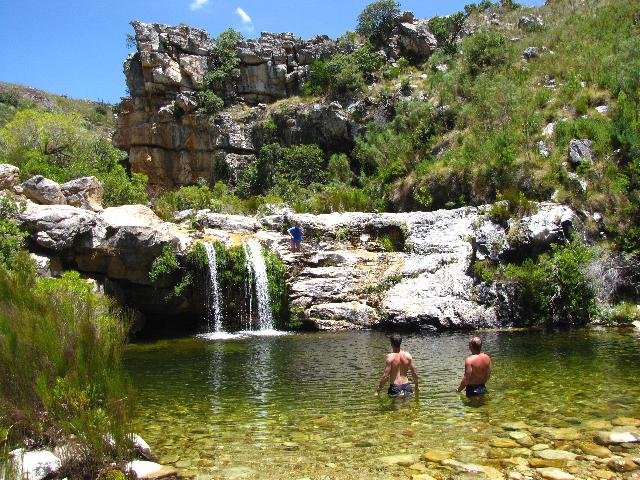

Right face-Arrow face Traverse Hiking
This route goes up the fabulous India—Venster Route, follows a spectacular traverse on the face of Table Mountain, and then descends steeply down Yellowstone Gully: not for the faint-hearted! If you were even slightly out of your comfort zone on the India—Venster scrambles, don’t proceed!
- Getting there: park your car at Kloof Corner on Table Mountain Road.
- Difficulty: do not attempt without guide: extreme exposure, scrambling, route-finding.
- Distance: 4km.
- GPS Co-ordinates: S 33°56.856′, E 18°24.122′
Tranquility Cracks Hiking

Tranquility Cracks refers directly to deep fissures in the rocks above Camps Bay through which one passes, about halfway along the Twelve Apostles. Beyond the cracks is a labyrinth of rocky corridors. There are a number of passages to choose from, all of which offer incredible views. Inside the cracks grow yellowwood trees that have earned the hike the alternative title of Yellowwood Cracks. Here you are sheltered from any wind and sun.
- Getting there: Start at the Pipe Track above Camps Bay, take Corridor Ravine to the top of the mountain and finish at the Pipe Track.
- Fitness: moderate to very fit.
- Duration: roughly 5 hours, depending on your level of fitness.
- GPS Co-ordinates: 33.9799° S, 18.3830° E
Wittels Hiking

The Witels is a remote stream of the mountainous Boland of South Africa and flows through rugged sandstone ranges some 60 km east of Cape Town. Access is quite difficult in summer and for practical purposes impossible in winter, when the canyon ("kloof" in Afrikaans) is in high flood. This river is perfect for hiking but you may need a few days to make the most of it!
- GPS Co-ordinates: -30.793244, 27.961927
Alphen Trails Hiking

The Alphen Trail is possibly one of the most popular of the green belt walks of the Constantia Valley. The trail winds along the Diep River to the Constantiaberg Mountain and in places allows one to walk on either side of the river, with a number of bridge crossings. It’s a beautiful walk filled with lush grass, trees, beautiful skies and the Le Sueur Meadow on the far end of the walk towards Hohenort.
- Gettiung there: The walk starts on Alphen Drive, Constantia, Cape Town.
- When: Best during daylight hours.
- Distance: 0.79 kms.
- GPS Co-ordinates: 34.0135° S, 18.4513° E
Silver Mine Climbing
The extensive, easily accessible sandstone crags of Silvermine are a mecca for Cape Town climbers. They escape the wind even when the southeaster is howling, so can get quite crowded at weekends and holidays.
- Where: Ou Kaapse Weg towards Noordhoek.
- Difficulty: Moderate to hard, Grade 13-31, Suitable for children
- GPS co-ordinates: S34°4.51', E18°24.06'
Montagu Climbing
Montagu is recognised as one of the most outstanding climbing destinations in South Africa due to the quality and number of climbing routes available. Montagu’s rock walls offer a wide variety of climbing opportunities at every level from beginner to expert. The charming town of Montagu is situated in the Klein Karoo (semi desert region) on the east side of the Langeberg mountain range 2 hours / 200km drive east of Cape Town. Montagu is well known for it’s hot mineral springs as well as climbing and mountain biking.
- Where: 6720 south, 45 Mount St, Montagu, 6720.
- Difficulty: There are many different climbing trails for all levels.
- GPS co-ordinates: 33.7890° S, 20.1074° E
Rockland Climbing
Rocklands is 250km/3 hours north of Cape Town. It is a very beautiful area in a semi-desert setting, very isolated and very safe. Rocklands is undoubtedly famous for it’s world class bouldering but this should not deter you from sampling the fine sport climbing.
- Where: The Cederberg mountains fall within the Cape Nature Conservation (CNC) and permits must be obtained in order to visit the area.
- GPS co-ordinates: -32.15396, 19.02746
Tulbagh Fishing
The rural village of Tulbagh nestling in its bowl of magnificent mountains and a serene, unspoiled valley. In itself a desirable destination for all seasons and many reasons, the historic town also provides an excellent base from which to explore the Cape Winelands and surrounding areas. Only a 90-minute scenic drive from Cape Town, getting away has never been so easy nor so much fun! There are so many lovely places to go fishing here such as the wild olive farm. Wild Olive Farm is a working olive farm offering fully equipped self-catering cottages, all with spectacular views of the beautiful Witzenberg mountain range which are snow capped in the Winter months. We are situated approximately an hour and 15 minutes from Cape Town and within 10 minutes drive of the historic town of Tulbagh.
- Where: Tulbagh, 6820, Scenic Cape Route 62, Western Cape, South Africa
Wild Ocean Fishing
From the little coastal town of Hout Bay in Cape Town, fantastic fishing charter adventures can be enjoyed with Wild Ocean Fishing Charters. The owner and skipper boasts extensive fishing experience, as well as all of the necessary courses and licenses to ensure that anglers heading out on one of his adventures is assured of safety and plenty of fun
- Where: Hout Bay Harbour, Harbour Road, Hout Bay, Atlantic Seaboard, Cape Town
- GPS co-ordinates: 34.0499° S, 18.3458° E
Tweede Tol Camping
The Tweede tol camp site is located in the Limietberg nature reserve. Limietberg is tucked away in the Du Toitskloof Mountains, near Paarl. The reserve stretches from Franschhoek in the south, eastwards towards Groot Drakenstein, and northwards as far as Voëlvlei Dam and is a World Heritage Site.
- GPS co-ordinates: 33.5703° S, 19.1383° E